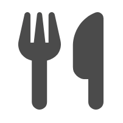

It is time to enjoy the meal. Eating food comes in many forms, from a snack, quick lunch, family supper, to a large multi course special occasion, with each having a specific purpose and people attending. The reason for eating has an influence on number of people, the frequency, and re-occurrence of the meal.
The data equivalent is informed decision within the area of customer experience. The use of data to help inform an objective decision is important for many organizations. There are a number of factors and considerations when making an informed decision:
- frequency of the decision
- ad hoc decision
- re-occurring decision
- audience
- individual decision maker
- group decision
- size and scope of the decision
- result and outcome
- decision is final
- decision leads to additional analysis
Key points
- understand the magnitude of the decision
- identify the audience
- identify frequency and re-occurrence of decision